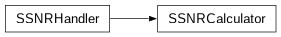
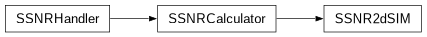
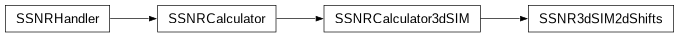
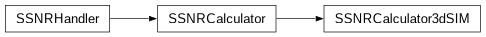

SSNRCalculator module¶
SSNRCalculator.py
This module contains classes for calculating the (image-independent) spectral signal-to-noise ratio (SSNR) for a given system optical system and illumination.
Mathematical details will be provided in the later documentation versions and in the corresponding papers.

- class SSNRCalculator.SSNR2dSIM(illumination, optical_system, readout_noise_variance=0)[source]¶
Bases:
SSNRCalculator
- class SSNRCalculator.SSNR2dSIMFiniteKernel(illumination, optical_system, kernel, readout_noise_variance=0)[source]¶
Bases:
SSNR2dSIM
- property illumination¶
- property kernel¶
- class SSNRCalculator.SSNR3dSIM2dShifts(illumination, optical_system, readout_noise_variance=0)[source]¶
Bases:
SSNR3dSIMBase
- class SSNRCalculator.SSNR3dSIM2dShiftsFiniteKernel(illumination, optical_system, kernel, readout_noise_variance=0)[source]¶
Bases:
SSNR3dSIM2dShifts- property illumination¶
- property kernel¶
- class SSNRCalculator.SSNR3dSIM3dShifts(illumination, optical_system, readout_noise_variance=0)[source]¶
Bases:
SSNR3dSIMBase
- class SSNRCalculator.SSNRCalculator(illumination, optical_system, readout_noise_variance=0)[source]¶
Bases:
SSNRBase- property illumination¶
- property optical_system¶
- class SSNRCalculator.SSNR3dSIMBase(illumination, optical_system, readout_noise_variance=0)[source]¶
Bases:
SSNRCalculator